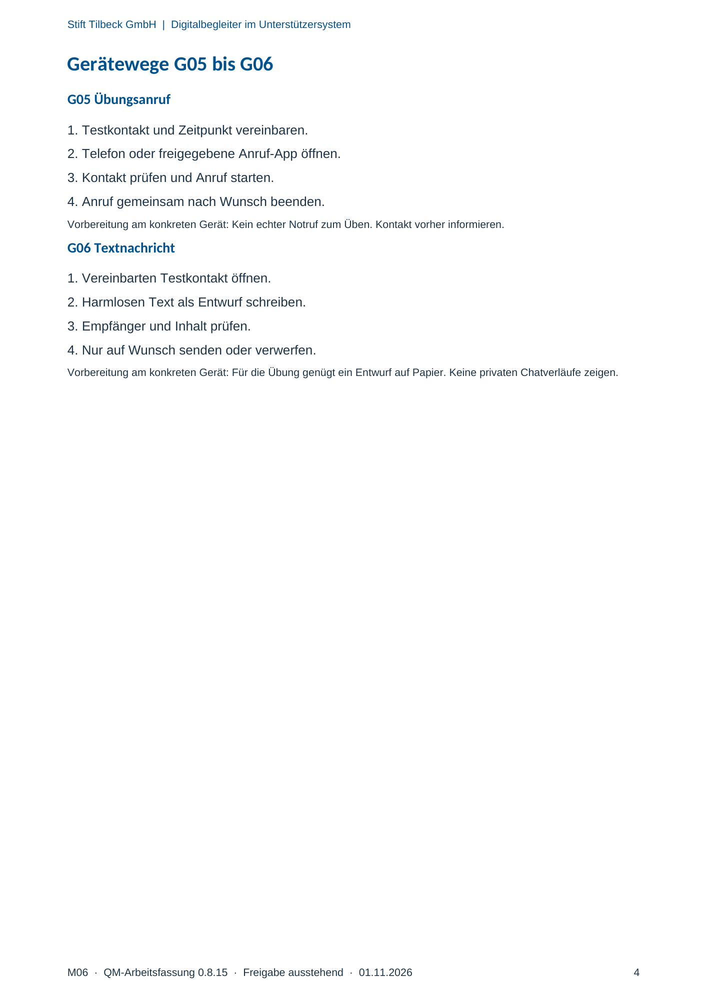

M06 · Originalseite 4
Textnachricht
Original-Druckseite mit G06. Auf derselben Seite stehen außerdem G05. Diese sind dadurch keine zusätzliche Aufgabe.
Fragen und Ankreuzfelder werden auf dem Ausdruck bearbeitet. Die Lesefassung speichert keine Antworten.
Lesefassung · Seite 4
Stift Tilbeck GmbH | Digitalbegleiter im Unterstützersystem
M06 · QM-Arbeitsfassung 0.8.15 · Freigabe ausstehend · 01.11.2026 4
Gerätewege G05 bis G06
G05 Übungsanruf
1. Testkontakt und Zeitpunkt vereinbaren.
2. Telefon oder freigegebene Anruf-App öffnen.
3. Kontakt prüfen und Anruf starten.
4. Anruf gemeinsam nach Wunsch beenden.
Vorbereitung am konkreten Gerät: Kein echter Notruf zum Üben. Kontakt vorher informieren.
G06 Textnachricht
1. Vereinbarten Testkontakt öffnen.
2. Harmlosen Text als Entwurf schreiben.
3. Empfänger und Inhalt prüfen.
4. Nur auf Wunsch senden oder verwerfen.
Vorbereitung am konkreten Gerät: Für die Übung genügt ein Entwurf auf Papier. Keine privaten Chatverläufe zeigen.
Originalseite ansehen
